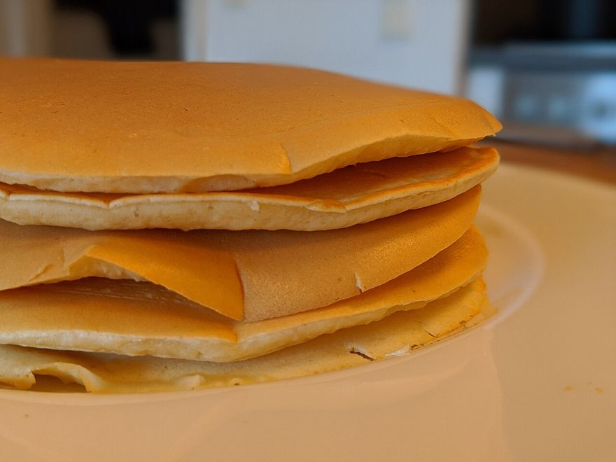
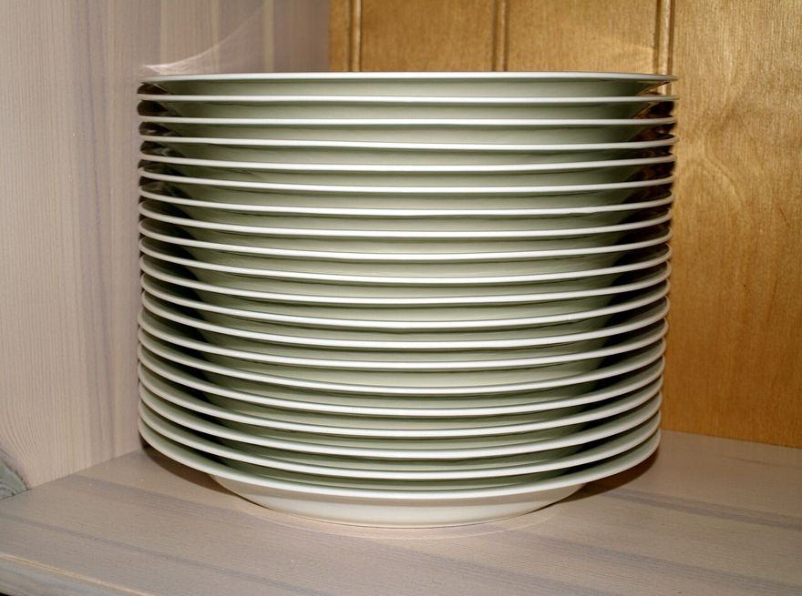
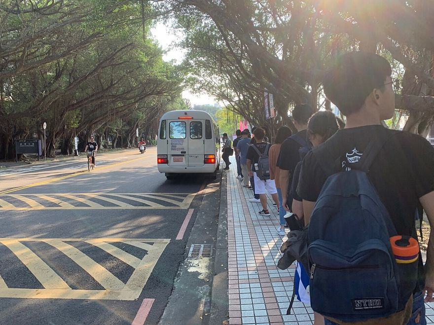
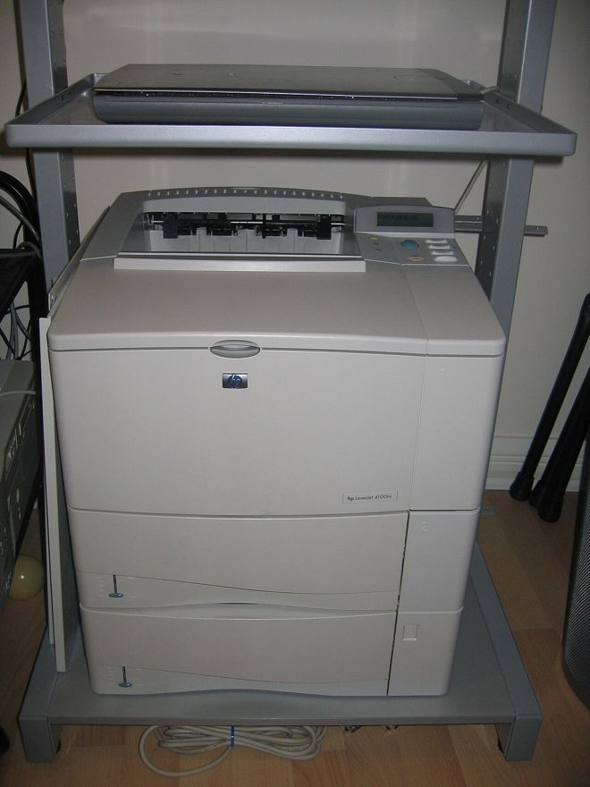
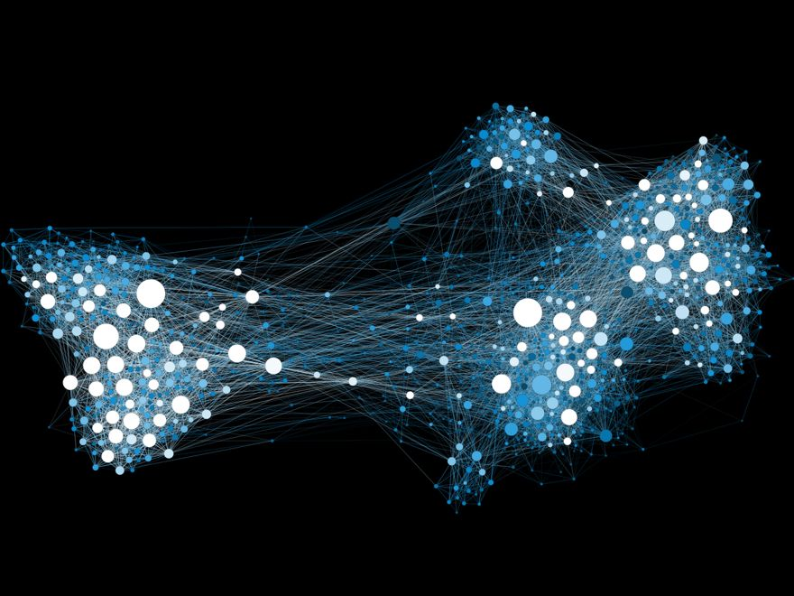
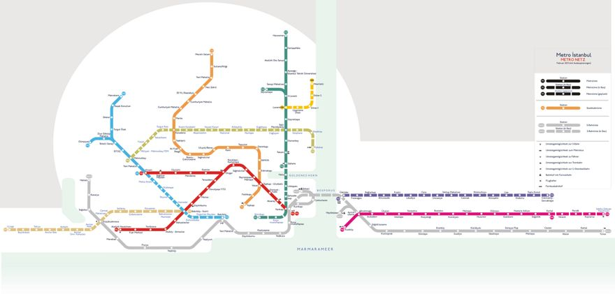

여행 가방에 책, 옷, 보조 배터리, 세면도구를 차례로 넣었어요. 공항에서 줄을 서 있는데, 보조 배터리는 비행기에 들고 타야 한다는 것이 생각났어요. 가방을 열어 보니 보조 배터리는 저 아래에 있어요.
보조 배터리를 꺼내려면 어떻게 해야 할까요? 맨 위의 세면도구부터 하나씩 꺼내야 해요. 가장 나중에 넣은 것이 가장 먼저 나와요.

쌓아 놓은 팬케이크새로 구운 것은 맨 위에 올리고, 먹을 때도 맨 위부터 집어요.사진: Shisma · CC BY 4.0 · Wikimedia Commons

쌓아 놓은 접시가운데 접시만 쏙 빼낼 수는 없어요.사진: Santeri Viinamäki · CC BY-SA 4.0 · Wikimedia Commons쌓아 놓은 책맨 아래 책을 보려면 위의 책을 모두 내려야 해요.사진: Alexander Grey · CC0 · Wikimedia Commons
쉽게 말하면
접시에 쌓아 올린 핫케이크. 새로 구운 것은 맨 위에 올리고, 먹을 때도 맨 위부터 집습니다. 중간에서 빼낼 수는 없죠. 이것이 후입 선출(LIFO)입니다.
스택의 기본 연산은 push · pop · peek · isEmpty 네 가지입니다.
직접 해 보기
스택 시뮬레이터 — 넣고 빼 보기
top → C
Stack (LIFO)
값을 입력하고 push를 눌러 보세요. 비워 두면 A, B, C… 순으로 자동 입력됩니다.
꺼낸 순서: (없음)
A → B → C 순서로 넣고 계속 pop 해 보세요. C → B → A, 넣은 것의 정반대 순서로 나옵니다.
파이썬 리스트로 구현한 스택
class Stack:
def __init__(self):
self.stack = []
def isEmpty(self):
return len(self.stack) == 0
def push(self, data):
self.stack.append(data) # 리스트 뒤쪽 = top
def pop(self):
if not self.isEmpty():
return self.stack.pop()
def peek(self):
if not self.isEmpty():
return self.stack[-1]
왜 리스트의 뒤쪽을 쓸까? 앞쪽에서 넣고 빼면 나머지 데이터가 전부 한 칸씩 밀려야 합니다. 뒤쪽은 그런 이동이 없어 훨씬 빠릅니다.
ADT(추상 자료형)란 데이터 구조가 어떻게 동작해야 하는지를 구현 방법과 분리해 정의한 것입니다. 스택의 ADT는 push(i) 추가 · pop() 삭제 · isEmpty() 공백 검사 · peek() 확인 네 가지입니다.
결과 예측
스택에서 무엇이 나올까?
빈칸 채우기
스택 클래스 완성하기
스택이 쓰이는 곳
웹 브라우저의 뒤로 가기 — 방문한 주소를 쌓아 두었다가 마지막 것부터 꺼낸다
함수 호출과 복귀 — 돌아갈 위치를 저장하는 함수 스택 (재귀의 동작 원리)
편집기의 되돌리기(Undo), 소스 코드의 괄호 검사
미로의 깊이 우선 탐색(DFS), 문자열 뒤집기·회문 검사
중위 표기식을 후위 표기식으로 변환하기, 후위 표기법 계산
정보과학으로 지식 키우기 · 보충 심화
스택 오버플로
스택 오버플로는 스택의 메모리 용량을 초과하는 상황입니다. 이 상태가 되면 더 이상 데이터를 삽입할 수 없습니다. 주로 무한 재귀 호출, 비정상적인 반복 호출, 메모리 제한 상황에서 발생합니다.
다만 파이썬에서 스택은 보통 리스트로 구현하므로, 파이썬 프로그래밍 환경에서 스택 오버플로가 발생할 가능성은 거의 없습니다. 반대로 비어 있는 스택에서 pop·peek을 하면 언더플로 오류가 납니다.
스택으로 문제 해결하기 ① 문자열 뒤집기
문자를 차례로 스택에 넣은 뒤 하나씩 꺼내면 입력의 정반대 순서가 나옵니다. 간단한 암호문을 만들 수 있습니다.
def input_str(Stack):
sts = input('문자열 입력: ')
for i in sts:
Stack.push(i) # 한 글자씩 스택에 삽입
def reverse(Stack):
print('암호문 출력: ', end='')
while not Stack.isEmpty(): # 공백이 될 때까지
print(Stack.pop(), end='') # 하나씩 꺼내 출력
s = Stack()
input_str(s) # 예: hello
reverse(s) # 예: olleh
코드 따라가기
스택으로 문자열 뒤집기 따라가기
스택으로 문제 해결하기 ② 회문 검사
문자열의 앞쪽 절반을 스택에 넣고, 뒤쪽 절반을 읽으면서 하나씩 꺼내 비교합니다. 끝까지 모두 같으면 회문입니다. 길이가 홀수면 가운데 글자 하나는 건너뜁니다.
def check(string):
s = Stack()
length = len(string)
mid = length // 2 # 중간 위치
for i in range(mid):
s.push(string[i]) # 앞쪽 절반을 스택에 삽입
if length % 2 != 0: # 길이가 홀수이면
mid += 1 # 가운데 글자는 검사에서 제외
for i in range(mid, length): # 뒤쪽 절반과 1:1 비교
if s.pop() != string[i]:
print('회문이 아닙니다.')
return
print('회문입니다.')
check('토마토') # 회문입니다.
check('ABCDAB') # 회문이 아닙니다.
스택 없이도 가능할까? ① 문자열 슬라이싱 s == s[::-1]로 비교 ② 투 포인터 기법으로 양 끝에서 안쪽으로 좁혀 가며 비교 — 두 방법 모두 가능합니다.
직접 해 보기
괄호 검사기 — 스택이 짝을 맞추는 과정
스택 (오른쪽이 top)
식을 직접 고쳐 써도 돼요. 괄호가 아닌 글자는 그냥 지나가요.
코드 따라가기
괄호 검사 따라가기 — '([)]'는 왜 틀렸을까
역량 키우기 · 수행 활동
괄호 검사 프로그램 — 프로그래밍 언어에서 대괄호 [ ], 중괄호 { }, 소괄호 ( )는 반드시 짝을 이뤄야 합니다. 왼쪽 괄호는 스택에 넣고, 오른쪽 괄호를 만나면 스택에서 꺼내 짝이 맞는지 검사합니다.
예시
판정
A[ ( i + 1 ) ] = 0
오류 없음
if ((i==0) && (j==0)
왼쪽 괄호가 남음 — 조건 위반
while (i < 10) ) :
오른쪽 괄호가 더 많음 — 조건 위반
A[ ( i+1 ] ) = 0
괄호의 종류가 어긋남 — 조건 위반
순서 맞추기
순서 맞추기 — 스택으로 10진수를 2진수로
낱말 풀이
데이터 구조
데이터를 쓰기 좋게 담아 두는 방법
후입 선출 (LIFO)
나중에 들어간 것이 먼저 나오는 방식
top
스택의 맨 위. 넣고 빼는 일이 일어나는 곳
언더플로
비어 있는데 꺼내려고 해서 생기는 오류
오버플로
꽉 찼는데 더 넣으려고 해서 생기는 오류
회문
앞으로 읽어도 뒤로 읽어도 같은 글
스스로 해결하기
다음 연산을 차례로 수행할 때 스택의 변화를 그려 보자. push(사과) → push(바나나) → push(딸기) → push(수박) → pop() → push(포도) → pop() → pop() → pop()
main()이 a()를 부르고, a()가 b()와 c()를 부를 때 함수 스택이 어떻게 쌓이고 사라지는지 단계별로 그려 보자.
스택을 사용하지 않고 문자열을 뒤집는 방법을 생각해 보자.
1-2 큐 — 먼저 온 사람이 먼저 나간다 7주차
양쪽이 열려 있어서, 넣는 곳(rear)과 빼는 곳(front)이 서로 다릅니다.
이 시간에 배울 내용
데이터를 들어온 순서대로 처리해야 할 때는 어떻게 할까?
큐가 무엇인지 알고, 큐의 연산을 설명할 수 있어요.
파이썬 리스트로 큐를 만들 수 있어요.
큐로 급식 대기, 피보나치수열, 다리 건너기 문제를 풀 수 있어요.
생활 속 이야기 · 버스 정류장
버스 정류장에 사람들이 한 줄로 서 있어요. 버스가 오면 맨 앞사람부터 차례로 타요. 방금 온 사람은 줄의 맨 뒤에 서서 기다려요. 새치기는 안 돼요.
동영상을 볼 때 잠깐 멈추는 ‘버퍼링’도 같은 원리예요. 먼저 받은 영상 조각부터 차례로 틀어 주거든요. 컴퓨터는 이런 줄을 어떻게 만들까요?

먼저 온 사람이 앞에 서고, 버스에도 먼저 타요. 줄의 맨 앞이 front, 맨 뒤가 rear예요.사진: Tbatb · CC BY-SA 4.0 · Wikimedia Commons
쉽게 말하면
매표소 줄, 드라이브스루 대기 줄. 뒤에 서서 기다리다가 앞에서부터 차례로 빠져나갑니다. 선입 선출(FIFO)입니다.
큐도 연산은 enqueue · dequeue · peek · isEmpty 네 가지. 비었을 때 빼면 언더플로 오류입니다.
직접 해 보기
스택 vs 큐 — 같은 데이터를 동시에 넣고 빼기
front → A
front (삭제)rear (삽입)
Queue (FIFO)
top → C
Stack (LIFO)
두 구조에 똑같은 순서로 데이터를 넣습니다. 뺄 때 무엇이 달라지는지 보세요.
큐에서 나온 순서: (없음) 스택에서 나온 순서: (없음)
넣는 순서는 같아도 나오는 순서는 정반대입니다. 이 차이 하나가 DFS(스택)와 BFS(큐)의 탐색 순서를 갈라놓습니다.
class Queue:
def __init__(self):
self.que = []
def isEmpty(self):
return len(self.que) == 0
def enqueue(self, data):
self.que.append(data) # 뒤쪽에 추가
def dequeue(self):
if not self.isEmpty():
return self.que.pop(0) # 앞쪽에서 삭제
def peek(self):
if not self.isEmpty():
return self.que[0]
결과 예측
큐에서 무엇이 나올까?
큐가 쓰이는 곳
프린터 인쇄 작업 순서, 콜센터 상담 대기 순서, 맛집 줄서기 앱
동영상 버퍼링 — 먼저 받은 데이터부터 재생
미로의 너비 우선 탐색(BFS)
우선순위 큐 — 들어온 순서가 아니라 우선순위가 높은 것부터 나가는 변형 (Ⅳ단원 다익스트라에서 사용)
데이터 패킷 모델링, 공항 활주로 비행기 시뮬레이션, 은행 대기열 시뮬레이션
덱(deque)은 앞과 뒤 양쪽에서 모두 삽입·삭제가 가능한 구조입니다. 스택처럼도, 큐처럼도 쓸 수 있습니다.

프린터는 먼저 받은 인쇄 작업부터 차례로 처리해요. 기다리는 작업들이 서 있는 줄이 ‘인쇄 작업 큐’예요.사진: Tim Walker · CC BY 2.0 · Wikimedia Commons
빈칸 채우기
큐 클래스 완성하기
큐로 문제 해결하기 ① 급식 대기 프로그램
대기 줄에 선 학생 수에 한 명당 5분을 곱해 예상 대기 시간을 알려 주고, 앞에서부터 한 명씩 입장시킵니다.
def wait(Queue): # 대기 시간 계산
time = len(Queue.que) * 5
return time
def display(Queue): # 현재 상태 출력
print('▶현재 대기 상태:', ' → '.join(Queue.que), end=' ')
print('▶현재 예상 대기 시간:', wait(Queue), '분')
def enter(Queue): # 맨 앞 학생 입장
if not Queue.isEmpty():
person = Queue.dequeue()
print(person, '이(가) 급식실에 입장했습니다.')
q = Queue()
q.enqueue('지원'); display(q) # 지원, 5분
q.enqueue('수현'); display(q) # 지원 → 수현, 10분
q.enqueue('채원'); display(q) # 지원 → 수현 → 채원, 15분
enter(q); display(q) # 수현 → 채원, 10분
enter(q); display(q) # 채원, 5분
'구분자'.join(리스트)는 리스트의 문자열들을 구분자로 이어 붙입니다. print(…, end=' ')는 줄바꿈 대신 공백을 넣어 다음 출력을 같은 줄에 이어 씁니다.
코드 따라가기
급식 줄 따라가기
큐로 문제 해결하기 ② 피보나치수열 계산
큐에 앞의 두 항만 남겨 두고 굴려 가며 계산합니다. 첫 값은 계산 후 버려야 하므로 dequeue()로 꺼내고, 두 번째 값은 다음에도 써야 하므로 peek()으로 확인만 합니다.
def fibo(n):
print('F(1) = 1')
for i in range(2, n + 1):
first = q.dequeue() # 이전 항 — 꺼내고 삭제
second = q.peek() # 현재 항 — 확인만
new_value = first + second
q.enqueue(new_value) # 새 항을 큐 뒤에 추가
print(f'F({i}) = {new_value}')
q = Queue()
q.enqueue(0) # F(0) = 0
q.enqueue(1) # F(1) = 1
fibo(10)
파이썬 내장 queue 모듈 — 직접 구현하지 않아도 됩니다. from queue import Queue 후 put(i) 삽입, get() 삭제, empty() 공백 검사, qsize() 크기 확인을 쓸 수 있습니다.
코드 따라가기
피보나치를 큐로 굴리기 따라가기
직접 해 보기
다리를 건너는 트럭 — 큐 두 개로 따라가기
다 건넌 트럭
다리 위 (큐) ← 진행 방향
기다리는 트럭 (큐)
0지난 시간(초)
0다리 위 무게 / 10kg
다리도 하나의 큐예요. 먼저 올라간 트럭이 먼저 내려가요. 1초마다 ① 다리 맨 앞 칸의 트럭이 내려가고 ② 무게가 허락하면 기다리던 맨 앞 트럭이 올라가요.
스스로 해결하기
다음 연산을 차례로 수행할 때 큐의 변화를 그려 보자. enqueue(3) → enqueue(4) → enqueue(5) → dequeue() → dequeue() → enqueue(6) → enqueue(1) → dequeue() → dequeue()
DFS는 스택, BFS는 큐 — 탐색 알고리즘의 성격을 결정하는 것이 바로 이 그릇의 모양이다.
2-1 트리 — 계층을 표현하는 구조 8~9주차
학교 조직도, 폴더 구조처럼 위아래 관계가 있는 데이터를 담습니다.
이 시간에 배울 내용
계층이 있는 데이터는 어떻게 표현할까?
트리가 무엇인지 알고, 트리의 구성 요소를 가리키는 말을 쓸 수 있어요.
트리를 인접 행렬, 인접 리스트, 리스트로 저장할 수 있어요.
이진 탐색 트리로 값을 빠르게 찾을 수 있어요.
생활 속 이야기 · 내 사진은 어디에
컴퓨터에서 소풍 사진을 찾아요. ‘내 문서’ 폴더 안에 ‘사진’ 폴더가 있고, 그 안에 ‘2026년’ 폴더, 그 안에 ‘소풍’ 폴더가 있어요. 맨 위 폴더 하나에서 시작해 아래로 가지를 치며 내려가요.
스택과 큐는 데이터를 한 줄로 늘어놓았어요. 이렇게 가지를 치며 갈라지는 데이터는 어떻게 담을까요?
뿌리 하나에서 줄기가 나오고, 줄기에서 가지가, 가지에서 잎이 나와요. 이 나무를 거꾸로 뒤집은 모양이 데이터 구조의 트리예요.사진: Daniel Lu (User:dllu) · CC BY-SA 4.0 · Wikimedia Commons
루트는 단 하나. 루트를 뺀 모든 노드는 부모가 정확히 하나씩 있습니다.
트리에서 자주 쓰는 용어
용어
뜻
노드 · 링크
데이터를 저장하는 자리 · 노드를 잇는 선
루트 노드
최상위 노드. 트리에 하나만 존재한다
부모 노드
어떤 노드와 직접 연결된 위쪽 노드. 루트를 뺀 모든 노드는 부모가 하나씩 있다
자식 노드
어떤 노드와 직접 연결된 아래쪽 노드. 없을 수도, 여럿일 수도 있다
형제 노드
부모가 같은 노드끼리
단말 노드
자식이 없는 노드 (잎 노드)
서브 트리
어떤 노드를 루트로 삼는 트리. 모든 노드는 자신의 서브 트리를 이룬다
레벨 · 높이
루트에서 떨어진 단계 · 트리 전체의 최대 레벨
차수
한 노드가 가진 자식의 수
데이터 구조의 체계 — 선형 구조에는 스택·큐가, 비선형 구조에는 트리·그래프가 속합니다. 트리를 ‘나무’라 부르는 이유는 루트를 위에 두고 뒤집어 놓으면 나무 모양이 되기 때문입니다.
트리를 컴퓨터에 저장하는 두 가지 방법
방법
저장 방식
장점
단점
인접 행렬
n×n 2차원 리스트에 연결이 있으면 1
연결 여부를 바로 확인
빈칸이 많아 메모리 낭비
인접 리스트
노드마다 연결된 노드만 리스트로 저장
메모리 절약
특정 연결 확인이 상대적으로 느림
인접 행렬로 트리 저장하기
n = int(input('노드 개수: '))
m = n - 1 # 트리의 링크 수는 항상 n-1
am = [[0 for _ in range(n)] for _ in range(n)] # n × n 2차원 리스트
print(f'링크 정보를 부모 노드와 자식 노드 순서로 {m}개 입력하세요.')
for i in range(m):
e1, e2 = input().split() # 노드 이름은 대문자로, 한 칸 띄워 입력
am[ord(e1) - ord('A')][ord(e2) - ord('A')] = 1
for i in range(n): # 저장된 값 출력
for j in range(n):
print(am[i][j], end=' ')
print()
ord('A')는 문자 A의 정숫값(65)을 돌려줍니다. ord(문자) - ord('A')로 A→0, B→1 … 처럼 이름을 인덱스로 바꿉니다. split()은 공백을 기준으로 문자열을 나눕니다.
인접 리스트로 트리 저장하기
n = int(input('노드 개수: '))
m = n - 1
al = [[0] for _ in range(n)] # 각 리스트의 첫 칸은 부모 노드 자리
print(f'링크 정보를 부모 노드와 자식 노드 순서로 {m}개 입력하세요.')
for i in range(m):
e1, e2 = input().split()
al[ord(e1) - ord('A')].append(e2) # 부모의 리스트에 자식 추가
al[ord(e2) - ord('A')][0] = e1 # 자식의 리스트 첫 칸에 부모 저장
vertex = 'A'
for vlist in al:
print(f'[{vertex}]: ', end=' ')
for v in vlist:
print(v, end=' ')
print()
vertex = chr(ord(vertex) + 1) # 다음 알파벳으로
루트 노드는 부모가 없으므로 첫 칸에 0이 남습니다. 예를 들어 A → 0 B C D는 “A는 부모가 없고 자식이 B·C·D”라는 뜻입니다.
이진 트리와 이진 탐색 트리
이진 트리는 자식이 최대 2개(왼쪽·오른쪽)인 트리입니다. 리스트에 순서대로 담으면 인덱스 계산만으로 가족 관계를 알 수 있습니다.
찾는 노드
계산
부모 노드
i // 2
왼쪽 자식
2 * i
오른쪽 자식
2 * i + 1
왼쪽 서브 트리는 모두 작은 값, 오른쪽 서브 트리는 모두 큰 값. 이 규칙이 모든 노드에 재귀적으로 적용되기 때문에 한 번 비교할 때마다 절반을 버릴 수 있습니다.
이진 탐색 트리의 3가지 규칙 — ① 모든 노드는 서로 다른 값을 가진다 ② 왼쪽 서브 트리에는 그 노드보다 작은 값만 있다 ③ 오른쪽 서브 트리에는 그 노드보다 큰 값만 있다. 이 규칙은 모든 서브 트리에 재귀적으로 적용됩니다.
데이터를 넣는 과정 — 8, 3, 5, 14, 2, 10 순서로 입력
8 입력 → 루트가 된다
3 입력 → 8보다 작으므로 왼쪽
5 입력 → 8보다 작아 왼쪽, 3보다 크므로 3의 오른쪽
14 입력 → 8보다 크므로 오른쪽
2 입력 → 8보다 작아 왼쪽, 3보다 작으므로 3의 왼쪽
10 입력 → 8보다 커서 오른쪽, 14보다 작으므로 14의 왼쪽
리스트로 표현한 이진 탐색 트리에 저장하고 탐색하기
def insert(idx, num): # idx: 저장 위치, num: 저장할 값
if bst[idx] == 0: # 빈자리면 저장
bst[idx] = num
elif num < bst[idx]:
insert(idx * 2, num) # 작으면 왼쪽 자식으로
else:
insert(idx * 2 + 1, num) # 크면 오른쪽 자식으로
def search(idx, num, cnt): # cnt: 비교 횟수
if bst[idx] == 0:
print(f'{num} 탐색 실패 (비교 {cnt}회)'); return
if bst[idx] == num:
print(f'{num} 탐색 성공 (비교 {cnt}회)'); return
if num < bst[idx]:
search(idx * 2, num, cnt + 1)
else:
search(idx * 2 + 1, num, cnt + 1)
input_num = [10, 5, 3, 13, 2, 14, 7, 9, 4, 12]
search_num = [5, 2, 7, 12, 1]
bst = [0] * 30 # 순차 표현용 리스트(루트 인덱스는 1)
for v in input_num:
insert(1, v)
for v in search_num:
search(1, v, 1)
균형이 중요합니다. 한쪽으로 치우친 트리는 탐색이 느려집니다. 이를 자동으로 맞춰 주는 AVL 트리, 레드-블랙 트리 같은 구조도 있습니다.
빈칸 채우기
번호 계산으로 가족 찾기
직접 해 보기
이진 탐색 트리 — 값을 넣고 찾아보기
넣거나 찾을 때 지나간 길이 색으로 표시돼요. 같은 수라도 넣는 순서에 따라 트리 모양이 달라져요. 작은 수부터 차례로 넣으면 어떤 모양이 될까요?
코드 따라가기
이진 탐색 트리에 값 넣기 따라가기
결과 예측
몇 번 견주어 찾을까?
순서 맞추기
순서 맞추기 — 이진 탐색 트리에서 값 찾기
역량 키우기 · 수행 활동
토너먼트 대진표 — 128개 동아리가 신청 순서대로 대결하는 토너먼트에서, 두 팀의 신청 번호를 입력받아 서로 만나려면 각각 몇 번 이겨야 하는지 계산해 보자. 토너먼트 대진표가 곧 이진 트리이므로, 두 노드가 같은 부모를 만날 때까지 i // 2로 거슬러 올라가면 됩니다.
print('신청 번호 2개를 공백으로 구분하여 입력하시오.')
num1, num2 = list(map(int, input().split()))
num1 += 127 # 신청 번호를 단말 노드의 인덱스로 변환
num2 += 127
cnt = -1
while num1 != num2: # 같은 노드에서 만날 때까지 부모로 거슬러 올라감
num1 //= 2
num2 //= 2
cnt += 1
print(f'{cnt + 1}번 이기면 만날 수 있습니다.')
스스로 해결하기
주어진 트리에서 루트 노드 · E의 부모 노드 · D의 자식 노드 · F의 형제 노드 · 단말 노드를 각각 찾아보자.
같은 트리를 인접 행렬과 인접 리스트 두 가지로 표현해 보고, 사용한 칸 수를 비교해 보자.
이진 트리를 순차 데이터 구조로 저장하고, 특정 노드의 부모·왼쪽 자식·오른쪽 자식 인덱스를 계산해 확인해 보자.
낱말 풀이
계층
위아래로 나뉜 층. 윗것이 아랫것을 품는 관계
노드 · 링크
데이터를 담는 점과 점을 잇는 선 (정점 · 간선이라고도 해요)
인접
두 노드가 링크로 바로 이어져 있는 것
행렬
수를 가로줄(행)과 세로줄(열)로 늘어놓은 표
서브 트리
트리의 한 노드와 그 아래 전체
순차 데이터 구조
데이터를 순서대로 이어서 담는 구조. 파이썬의 리스트
2-2 그래프 — 관계와 경로를 표현하는 구조 9주차
트리보다 자유로운 구조. 사이클이 있어도 되고, 두 노드 사이에 여러 경로가 있어도 됩니다.
이 시간에 배울 내용
복잡하게 이어진 관계는 어떻게 표현하고 살펴볼까?
그래프가 무엇인지 알고, 그래프의 종류를 구분할 수 있어요.
그래프를 인접 행렬과 인접 리스트로 저장할 수 있어요.
깊이 우선 탐색과 너비 우선 탐색으로 그래프를 살펴보고 문제를 풀 수 있어요.
생활 속 이야기 · 친구의 친구
나는 민서와 친구예요. 민서는 지호와 친구이고, 지호는 또 나와도 친구예요. 반 친구들의 관계를 선으로 이어 보면 위아래도 없고, 돌고 돌아 다시 나에게 돌아오기도 해요.
트리는 부모가 하나뿐이라 이런 관계를 담을 수 없어요. 그물처럼 얽힌 관계는 어떻게 담을까요?

사회 관계망점은 사람, 선은 친구 관계예요.사진: Martin Grandjean · CC BY-SA 4.0 · Wikimedia Commons

지하철 노선도역이 노드, 역과 역을 잇는 선로가 링크예요. (이스탄불)사진: R1410 · CC BY-SA 3.0 · Wikimedia Commons섬과 다리섬이 노드, 다리가 링크예요. (덴마크)사진: Nikos Roussos · CC BY-SA 2.0 · Wikimedia Commons
트리와 그래프의 관계 — 트리는 사실 그래프의 한 종류입니다. 사이클이 없고, 두 노드 사이 경로가 오직 하나뿐인 그래프가 트리입니다.
내비게이션은 가중치 그래프에서 가중치 합이 가장 작은 경로를 찾아 안내합니다.
경로와 사이클
경로는 한 노드에서 다른 노드로 가는 길입니다. 두 노드 사이에 경로가 여러 개일 수 있습니다. 출발한 노드로 다시 돌아오는 경로를 사이클이라고 합니다.
예를 들어 대학 전공 과목 위계도에서 ‘컴퓨터 과학 개론 → 프로그래밍과 문제 해결 → 파이썬 프로그래밍’과 ‘컴퓨터 과학 개론 → 프로그래밍과 문제 해결 → 객체지향 프로그래밍 → 파이썬 프로그래밍’은 서로 다른 두 경로입니다. ‘데이터 구조 → 알고리즘 → 인공지능 개론 → 데이터 구조’처럼 제자리로 돌아오면 사이클입니다.
완전 그래프는 모든 노드가 자신을 뺀 나머지 전부와 연결된 그래프입니다. 노드가 n개일 때 링크 수는 무방향이면 n(n−1)/2, 방향이면 n(n−1)개입니다.
희소 그래프와 밀집 그래프 — 노드 수에 비해 링크가 적으면 희소 그래프, 많으면 밀집 그래프입니다. 희소 그래프는 인접 리스트가, 완전 그래프에 가까운 밀집 그래프는 인접 행렬이 유리합니다.
정보과학으로 지식 키우기 · 보충 심화
케빈 베이컨의 6단계 법칙
세상 모든 사람은 최대 6단계의 관계만 거치면 서로 연결된다는 법칙입니다. 배우들은 같은 영화에 함께 출연하며 연결되고, 이렇게 하나의 거대한 네트워크가 만들어집니다.
이 개념은 영화계 이야기로 끝나지 않고 사회관계망 서비스 분석의 중요한 이론으로 발전했습니다. 인터넷 구조, 바이러스 확산 등 다양한 네트워크 분석에도 쓰입니다.
그래프 탐색 — DFS와 BFS
같은 그래프라도 어떤 그릇을 쓰느냐에 따라 방문 순서가 달라집니다. 최단 거리를 찾을 때는 가까운 순서대로 도는 BFS가 유리합니다.
# 인접 행렬 am, 방문 표시 v 가 준비되어 있을 때
def dfs(cur): # 재귀 = 스택을 자동으로 쓰는 것
print(chr(cur + ord('A')), end=' ')
v[cur] = 1
for col in range(n):
if am[cur][col] == 1 and v[col] == 0:
dfs(col)
def bfs(cur): # 큐를 직접 사용
visit(cur)
while len(q) > 0:
cur = q.pop(0) # 선입 선출
for col in range(n):
if am[cur][col] == 1 and v[col] == 0:
visit(col)
직접 해 보기
DFS와 BFS — 한 단계씩 따라가기
스택 (오른쪽이 top)
방문한 순서
같은 그래프인데 방법에 따라 방문 순서가 달라져요. A에서 출발하면 DFS는 A B C E D, BFS는 A B D C E예요. 이어진 노드가 여럿이면 알파벳 순서가 빠른 것부터 방문해요.
코드 따라가기
깊이 우선 탐색 따라가기 — 재귀가 스택처럼 쌓여요
코드 따라가기
너비 우선 탐색 따라가기 — 큐에서 차례로 꺼내요
결과 예측
DFS와 BFS의 방문 순서
그래프를 인접 행렬로 저장하는 프로그램
방향·가중치 여부를 함께 입력받아 한 프로그램으로 세 종류를 모두 처리합니다.
a1 = input('방향 그래프인가요?[Y/N]')
a2 = input('가중치 그래프인가요?[Y/N]')
n = int(input('노드 개수: '))
m = int(input('링크 개수: '))
am = [[0 for _ in range(n)] for _ in range(n)]
print(f'링크 정보를 {m}개 입력하세요.')
for i in range(m):
if a2 == 'Y': # 가중치 그래프면
n1, n2, w = input().split() # 노드 2개와 가중치
else:
n1, n2 = input().split()
w = 1
if a1 != 'Y': # 무방향이면 양쪽에 모두 표시
am[ord(n2) - ord('A')][ord(n1) - ord('A')] = int(w)
am[ord(n1) - ord('A')][ord(n2) - ord('A')] = int(w)
for i in range(n):
for j in range(n):
print(am[i][j], end=' ')
print()
무방향 그래프는 대칭입니다. A—B가 연결되면 A행-B열과 B행-A열에 모두 표시해야 합니다. 방향 그래프는 화살표 방향의 한쪽에만 표시합니다. 가중치 그래프는 1 대신 가중치 값을 적습니다.
직접 해 보기
그래프 그리기 — 선을 이으면 표가 바뀌어요
0링크 수
0행렬에서 0이 아닌 칸
노드 두 개를 차례로 누르면 선이 생기고, 같은 두 노드를 다시 누르면 지워져요. 방향 그래프에서는 먼저 누른 노드에서 나중에 누른 노드로 화살표가 생겨요.
빈칸 채우기
무방향 그래프를 인접 행렬에 저장하기
그래프 탐색으로 문제 해결하기
① 두 노드가 연결되어 있는지 확인 — 섬 사이를 자동차로 갈 수 있을까?
n = 6
am = [[0,0,0,1,1,0], [0,0,0,0,0,0], [0,0,0,0,1,0],
[1,0,0,0,0,0], [1,0,1,0,0,0], [0,0,0,0,0,0]]
v = [0 for _ in range(n)]
possible = [False]
def dfs(cur, t): # 현재 노드, 목표 노드
if cur == t:
possible[0] = True
v[cur] = 1
for col in range(n):
if am[cur][col] == 1 and v[col] == 0:
dfs(col, t)
n1, n2 = input().split() # 예: A F
dfs(ord(n1) - ord('A'), ord(n2) - ord('A'))
print('자동차로 이동 가능' if possible[0] else '자동차로 이동 불가능')
② 최단 거리 탐색 — 모든 경로를 따라가며 가장 짧은 것 찾기
n = 6
am = [[0,5,0,2,11,13], [5,0,10,0,0,0], [0,10,0,0,0,2],
[2,0,0,0,5,0], [11,0,0,5,0,5], [13,0,2,0,5,0]]
v = [0 for _ in range(n)]
min_dist = [99999] # 최단 거리 초기화
def dfs(cur, t, dist):
if cur == t and dist < min_dist[0]:
min_dist[0] = dist # 더 짧은 경로를 찾으면 갱신
return
for col in range(n):
if am[cur][col] > 0 and v[col] == 0:
v[col] = 1
dfs(col, t, dist + am[cur][col])
v[col] = 0 # 되돌아오며 방문 표시 해제(백트래킹)
n1, n2 = input().split()
dfs(ord(n1) - ord('A'), ord(n2) - ord('A'), 0)
print(f'{n1}도시에서 {n2}도시까지 최단 거리는 {min_dist[0]}입니다.')
모든 경로를 다 확인하므로 정확하지만 느립니다. 가중치 그래프에서 한 지점부터 다른 모든 지점까지의 최단 경로를 효율적으로 구하는 방법이 다익스트라 알고리즘이며, Ⅳ단원 탄소 발자국 프로젝트에서 사용합니다.
스스로 해결하기
주어진 그래프가 방향·무방향·가중치 중 어느 종류인지 판별하고, 인접 행렬과 인접 리스트로 각각 표현해 보자.
깊이 우선 탐색과 너비 우선 탐색을 수행했을 때의 방문 순서를 각각 적어 보자. (같은 조건이면 알파벳 순서가 빠른 노드를 먼저 방문한다)
우리 주변에서 그래프 구조로 표현하면 좋은 데이터를 찾아 표로 정리해 보자.
순서 맞추기
순서 맞추기 — 큐를 쓰는 너비 우선 탐색
낱말 풀이
경로
한 노드에서 다른 노드로 갈 때 거치는 노드들의 순서
사이클
출발한 노드로 다시 돌아오는 경로
가중치
링크에 붙은 값. 거리, 시간, 비용 등
완전 그래프
모든 노드가 나머지 모든 노드와 이어진 그래프
희소 · 밀집 그래프
링크가 적은 그래프 · 링크가 많은 그래프
탐색
이어진 노드를 빠짐없이 찾아가 보는 일
핵심 포인트
트리는 계층, 그래프는 관계. 트리 = 사이클 없고 경로가 유일한 그래프.
노드 n개 트리의 링크는 n−1개. 무방향 완전 그래프의 링크는 n(n−1)/2개.
저장은 인접 행렬(빠르지만 메모리 낭비) 또는 인접 리스트(메모리 절약).
이진 탐색 트리는 왼쪽=작은 값, 오른쪽=큰 값 → 비교할 때마다 절반을 배제한다.
DFS는 스택(재귀), BFS는 큐를 사용한다.
정리 단원 마무리 · 함께 풀어 보기 9주차
네 가지 데이터 구조를 한자리에 모아 견주어 보고, 모둠이 함께 미로를 탐색하는 프로그램을 만들어 봐요.
한눈에 보는 Ⅱ단원
데이터 구조
모양
특징
닮은 것
쓰이는 곳
스택
선형
나중에 넣은 것이 먼저 (LIFO)
쌓아 놓은 접시
뒤로 가기, 되돌리기, 함수 호출, 괄호 검사
큐
선형
먼저 넣은 것이 먼저 (FIFO)
매표소의 줄
인쇄 대기, 줄서기 앱, 버퍼링
트리
비선형
계층이 있음. 경로가 하나, 사이클 없음
조직도, 폴더
파일 시스템, 빠른 탐색(이진 탐색 트리)
그래프
비선형
복잡한 연결. 경로가 여러 개, 사이클 가능
지하철 노선도, 친구 관계
길 찾기, 사회관계망 분석
어떤 구조를 고를까? — ① 순서를 거꾸로 되짚어야 한다 → 스택. ② 들어온 순서대로 처리해야 한다 → 큐. ③ 위아래 관계가 있다 → 트리. ④ 여럿이 여럿과 얽혀 있다 → 그래프. 문제에 맞는 그릇을 고르는 것이 데이터 구조화예요.
협력적 문제 해결 활동 — 미로 탐색하기!
모둠 활동
미로의 입구에서 출구까지 가는 길을 찾는 프로그램을 만들어요. 미로의 칸 하나하나를 노드, 옆 칸으로 갈 수 있으면 링크로 놓으면 미로는 그래프가 돼요.
갈 수 있는 칸을 스택에 넣어 둘까요, 큐에 넣어 둘까요? 어떤 그릇을 쓰느냐에 따라 미로를 살펴보는 순서가 달라져요.
직접 해 보기
미로 탐색 — 스택으로 갈 때와 큐로 갈 때
0살펴본 칸 수
0스택에 든 칸 수
칸에 적힌 숫자는 살펴본 순서예요. 이웃 칸은 위·아래·왼쪽·오른쪽 순서로 넣어요. 스택은 한 길로 깊이 파고들고, 큐는 입구에서 가까운 칸부터 넓게 퍼져요. 두 방법이 출구에 닿기까지 살펴본 칸 수를 견주어 보세요.
문제 이해 및 분석 — 출발점·도착점·벽의 위치를 살펴 미로를 그래프로 나타내고, 어떤 데이터 구조가 필요한지와 그 까닭을 적어요.
알고리즘 설계 — ① 출발 칸을 스택(또는 큐)에 넣고 방문 표시를 한다. ② 스택이 빌 때까지: 하나 꺼내고, 도착점이면 끝, 아니면 갈 수 있는 이웃 칸을 넣는다.
코드 구현 — 역할을 나누어 방문 처리 함수와 탐색 함수를 만들어요.
발표 및 평가 — 모둠별로 발표하고 좋았던 점과 아쉬웠던 점을 나눠요.
예시 프로그램 — 스택으로 미로 탐색하기 (0은 길, 1은 벽)
maze = [[0, 1, 0, 0, 0, 0],
[0, 1, 0, 1, 1, 0],
[0, 0, 0, 1, 0, 0],
[1, 1, 0, 1, 0, 1],
[0, 0, 0, 0, 0, 1],
[0, 1, 1, 1, 0, 0]]
start, goal = (0, 0), (5, 5) # (행, 열)
def neighbors(r, c): # 갈 수 있는 이웃 칸 (위, 아래, 왼쪽, 오른쪽)
result = []
for dr, dc in [(-1, 0), (1, 0), (0, -1), (0, 1)]:
nr, nc = r + dr, c + dc
if 0 <= nr < 6 and 0 <= nc < 6 and maze[nr][nc] == 0:
result.append((nr, nc))
return result
def search(start, goal):
stack = [start] # 스택으로 쓸 리스트
visited = [start]
count = 0
while len(stack) > 0:
cur = stack.pop() # 맨 위(가장 나중에 넣은 칸)를 꺼냄
count += 1
if cur == goal:
print(f'{count}칸을 살펴보고 출구에 도착!')
return True
for nxt in neighbors(cur[0], cur[1]):
if nxt not in visited:
visited.append(nxt)
stack.append(nxt)
print('출구로 가는 길이 없습니다.')
return False
search(start, goal)
stack.pop()을 stack.pop(0)으로 딱 한 군데만 바꾸면 리스트가 큐처럼 움직여 너비 우선 탐색이 돼요. 살펴본 칸 수가 어떻게 달라지는지 확인해 보세요.
대단원 평가 맛보기
(○/×) 큐는 데이터를 삭제할 때 가장 마지막에 삽입된 데이터부터 삭제한다.
×. 큐는 가장 먼저 삽입된 데이터부터 삭제해요. 마지막 것부터 삭제하는 것은 스택이에요.
옳은 설명만 고르면? (가) 큐는 후입 선출 구조이다 (나) 스택과 큐 모두 미로 탐색에 쓰인다 (다) 스택은 함수 호출을 관리하는 데 쓰인다 (라) 큐는 인쇄 작업처럼 먼저 요청한 것을 먼저 처리하는 곳에 쓰인다
(나), (다), (라). 큐는 선입 선출(FIFO) 구조예요.
스택이나 큐가 비어 있을 때 데이터를 삭제하거나 참조하려고 하면 생기는 오류는?
언더플로(underflow) 오류. 그래서 꺼내기 전에 isEmpty()로 확인해요.
그래프의 인접 리스트 표현에 대한 설명으로 옳은 것은? ① 가중치 그래프는 표현할 수 없다 ② 노드 사이의 인접 여부를 0과 1로 나타낸다 ③ 각 노드에 인접한 노드의 정보를 리스트로 나타낸다 ④ 희소 그래프에서는 메모리 낭비가 심하다
③. ②는 인접 행렬의 설명이고, 인접 리스트는 오히려 희소 그래프에서 메모리를 아껴 줘요. 가중치도 (노드, 가중치)로 함께 적을 수 있어요.
(서술형) 사회관계망 서비스에서 나와 이어진 모든 사람을 찾으려면 어떤 데이터 구조를 써야 할까요? 까닭도 말해 보세요.
그래프. 친구 관계는 여럿이 여럿과 복잡하게 이어져 있어 그래프로 나타내는 것이 알맞아요. 그래프를 깊이 우선 탐색이나 너비 우선 탐색으로 살펴보면서 닿을 수 있는 노드의 수를 세면 돼요.
(서술형) 파이썬의 리스트로 스택을 구현하는 방법을 설명해 보세요.
리스트의 뒤쪽을 스택의 top으로 삼아요. 넣을 때는 append()로 맨 뒤에 추가하고, 꺼낼 때는 pop()으로 맨 뒤의 것을 꺼내요. 맨 위를 볼 때는 [-1]번 요소를 보고, 비었는지는 길이가 0인지로 확인해요.
직업 속으로 — 개발자 이야기
게임 개발자
상상을 화면 속 세상으로
영웅이 세상을 구하는 이야기를 좋아하다가 직접 새로운 세상을 만드는 일을 하게 되었대요. 몬스터의 조건·공격·스킬을 데이터로 정의하고, 파트별로 나누어 만든 뒤 하나로 합쳐 게임을 완성한다고 해요.
후배들에게: 여러 게임을 해 보며 끊임없이 견주고 분석하기.
AI 교육 도구 개발자
학생에게 꼭 맞는 공부 길 찾기
학생들의 학습 데이터를 분석해 수준에 맞는 내용을 골라 주는 맞춤형 학습 알고리즘을 만들어요. 파이썬과 인공지능의 기본 개념, 그리고 수학의 기초가 꼭 필요하다고 해요.
모두 Wikimedia Commons에서 가져온 자유 이용 사진이며, 원본을 가로 880픽셀 이하로 축소했어요. 그 밖의 그림과 표는 이 사이트에서 직접 그렸어요.
연습 코드 문제 6~9주차
스택·큐·트리·그래프를 실제로 굴려 보는 문제입니다. 정답 코드는 그대로 실행할 수 있습니다.
문제 1 10진수를 2진수로 — 스택으로 기초 · 스택
10진수를 2로 나눈 나머지를 스택에 쌓았다가 꺼내면 2진수가 됩니다. 리스트를 스택처럼 써서 to_binary(n)을 작성하시오.
to_binary(13) → '1101'
정답과 해설
나머지는 낮은 자리부터 나오는데 2진수는 높은 자리부터 써야 합니다. 순서를 뒤집어야 하니 스택이 딱 맞습니다.
def to_binary(n):
stack = []
while n > 0:
stack.append(n % 2) # 나머지를 쌓고
n //= 2
result = ''
while stack:
result += str(stack.pop()) # 거꾸로 꺼낸다
return result
print(to_binary(13)) # 1101
print(to_binary(10)) # 1010
문제 2 괄호 검사기 중급 · 스택
문자열에 들어 있는 ( ) { } [ ]가 올바르게 짝지어졌는지 판단하는 check_brackets(s)를 작성하시오.
여는 괄호는 쌓고, 닫는 괄호를 만나면 스택 맨 위와 짝이 맞는지 확인합니다. 끝났을 때 스택이 비어 있어야 정상입니다.
def check_brackets(s):
pairs = {')': '(', '}': '{', ']': '['}
stack = []
for ch in s:
if ch in '({[':
stack.append(ch)
elif ch in pairs:
if not stack or stack.pop() != pairs[ch]:
return False # 짝이 안 맞거나 여는 괄호가 없음
return len(stack) == 0 # 남은 여는 괄호가 없어야 정상
for test in ['A[(i+1)] = 0', 'if ((i==0) && (j==0)', 'A[(i+1] ) = 0']:
print(test, '→', check_brackets(test))
문제 3 후위 표기식 계산 심화 · 스택
'3 4 + 2 *'처럼 연산자가 뒤에 오는 후위 표기식을 계산하는 calc_postfix(expr)를 작성하시오.
숫자는 쌓아 두고, 연산자를 만나면 맨 위 두 개를 꺼내 계산한 뒤 결과를 다시 넣습니다. 꺼내는 순서가 반대이므로 주의합니다.
def calc_postfix(expr):
stack = []
for token in expr.split():
if token in '+-*/':
b = stack.pop() # 나중에 넣은 것이 오른쪽 피연산자
a = stack.pop()
if token == '+': stack.append(a + b)
elif token == '-': stack.append(a - b)
elif token == '*': stack.append(a * b)
else: stack.append(a / b)
else:
stack.append(int(token))
return stack.pop()
print(calc_postfix('3 4 + 2 *')) # 14
print(calc_postfix('5 1 2 + 4 * +')) # 14
문제 4 요세푸스 순서 — 큐로 중급 · 큐
1번부터 n번까지 원형으로 앉아 있을 때 k번째 사람마다 빠져나가는 순서를 큐로 구하는 josephus(n, k)를 작성하시오.
josephus(7, 3) → [3, 6, 2, 7, 5, 1, 4]
정답과 해설
앞에서 꺼내 뒤로 다시 넣기를 k−1번 반복하면, 그다음 꺼내는 사람이 빠질 차례입니다. 원형 구조를 큐 하나로 표현할 수 있습니다.
def josephus(n, k):
queue = list(range(1, n + 1))
order = []
while queue:
for _ in range(k - 1):
queue.append(queue.pop(0)) # 앞에서 꺼내 뒤로 보내기
order.append(queue.pop(0)) # k번째 사람 탈락
return order
print(josephus(7, 3)) # [3, 6, 2, 7, 5, 1, 4]
문제 5 스택 두 개로 큐 만들기 심화 · 스택·큐
append와 pop()(맨 뒤)만 쓸 수 있다고 할 때, 스택 두 개로 선입 선출이 되는 큐를 만드시오.
A, B, C를 넣고 세 번 빼면 A → B → C
정답과 해설
넣을 때는 in 스택에, 뺄 때는 out 스택에서 꺼냅니다. out이 비면 in을 통째로 옮겨 순서를 뒤집습니다.
class TwoStackQueue:
def __init__(self):
self.in_stack = []
self.out_stack = []
def enqueue(self, x):
self.in_stack.append(x)
def dequeue(self):
if not self.out_stack: # 꺼낼 것이 없으면
while self.in_stack:
self.out_stack.append(self.in_stack.pop()) # 옮기며 순서 뒤집기
if self.out_stack:
return self.out_stack.pop()
q = TwoStackQueue()
for x in ['A', 'B', 'C']:
q.enqueue(x)
print(q.dequeue(), q.dequeue(), q.dequeue()) # A B C
문제 6 이진 트리의 높이 중급 · 트리
리스트로 표현한 이진 트리(루트 인덱스 1, 빈칸은 0)에서 높이를 구하는 height(tree, i)를 재귀로 작성하시오.
왼쪽 서브 트리에는 작은 값만, 오른쪽에는 큰 값만 있으므로 왼쪽부터 훑으면 자동으로 정렬된 순서가 나옵니다.
def insert(node, value):
if node is None:
return {'val': value, 'left': None, 'right': None}
if value < node['val']:
node['left'] = insert(node['left'], value)
else:
node['right'] = insert(node['right'], value)
return node
def inorder(node, out):
if node is None:
return
inorder(node['left'], out) # 왼쪽
out.append(node['val']) # 자기
inorder(node['right'], out) # 오른쪽
root = None
for v in [8, 3, 10, 1, 6, 14, 4, 7]:
root = insert(root, v)
result = []
inorder(root, result)
print(result) # [1, 3, 4, 6, 7, 8, 10, 14]
문제 8 친구 무리는 몇 개일까 심화 · 그래프 DFS
친구 관계 그래프에서 서로 연결된 무리(연결 요소)가 몇 개인지 세는 코드를 작성하시오.
A—B, B—C, D—E, F 혼자 → 3개 무리
정답과 해설
아직 방문하지 않은 노드에서 DFS를 시작할 때마다 새로운 무리를 하나 발견한 것입니다.
graph = {'A': ['B'], 'B': ['A', 'C'], 'C': ['B'],
'D': ['E'], 'E': ['D'], 'F': []}
visited = set()
def dfs(node):
visited.add(node)
for nxt in graph[node]:
if nxt not in visited:
dfs(nxt)
groups = 0
for node in graph:
if node not in visited:
groups += 1
dfs(node)
print(f'{groups}번째 무리 발견 — 시작 노드 {node}')
print('무리 개수:', groups) # 3
문제 9 몇 다리 건너 아는 사이일까 심화 · 그래프 BFS
출발 노드에서 각 노드까지 몇 단계를 거쳐야 하는지 너비 우선 탐색으로 구하시오. (케빈 베이컨 6단계 법칙과 같은 원리)
A에서 출발 → A:0 B:1 D:1 C:2 E:3
정답과 해설
BFS는 가까운 노드부터 방문하므로 처음 도달했을 때의 단계 수가 곧 최단 거리입니다.
graph = {'A': ['B', 'D'], 'B': ['A', 'C', 'D'], 'C': ['B', 'E'],
'D': ['A', 'B'], 'E': ['C']}
def bfs_distance(start):
dist = {start: 0}
queue = [start]
while queue:
cur = queue.pop(0) # 선입 선출
for nxt in graph[cur]:
if nxt not in dist: # 처음 도달했을 때가 최단
dist[nxt] = dist[cur] + 1
queue.append(nxt)
return dist
for node, d in sorted(bfs_distance('A').items()):
print(f'{node}: {d}단계')